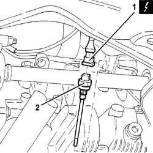

1084A40 ENGINE OIL LEVEL SENSOR - R.R.
- Path
- Procedures > 10 ENGINE > 1084 ENGINE LUBRICATION > 1084A INDICATORS/CHECK DEVICES > 1084A40 ENGINE OIL LEVEL SENSOR - R.R.
- Kind
- repair procedure (removal / refitting; the operation number is the code)
- Applies to
- engines: 2.4 JTD 20V; all production periods
- Interactive page
- https://sloeber94.github.io/elrnDB-lThss/en/#/850873
Applies to: engines: 2.4 JTD 20V; all production periods
 Removing
Removing
 Refitting
Refitting- Position the vehicle on a lift.
- Disconnect the negative battery terminal.
- Raise the lift.
See in Op. 7055B54 PROTECTION/GUARD under engine - R.R.
1. Disconnect the electrical connection for the switch.
 | Description | Connector |
|---|---|---|
1 | Engine oil level sensor | K032 |
2. Undo and remove the engine oil pressure warning light switch.

Applies to: engines: 2.4 JTD 20V; all production periods
Refitting
Removing- Fit the engine oil pressure warning light switch.
 | Value - daNm | Fastening | Component | Ø |
|---|---|---|---|---|
. | 3 | - | OIL LEVEL DIPSTICK SENSOR | M12 X 1.25 |
- Connect the electrical connection.
| Description | Connector |
|---|---|---|
. | Engine oil level sensor | K032 |
See in Op. 7055B54 PROTECTION/GUARD under engine - R.R.
- Lower the lift.
- Connect the negative battery terminal.
- Remove the vehicle from the lift.